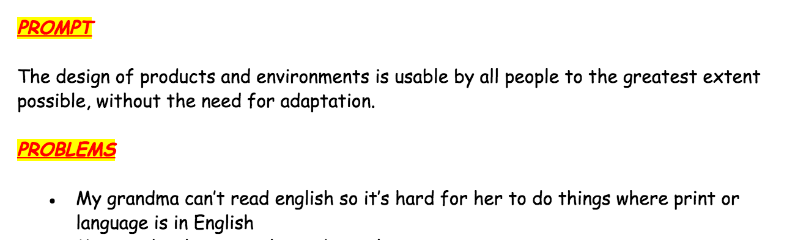
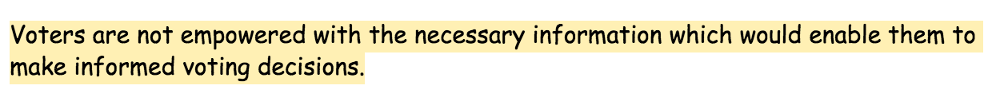
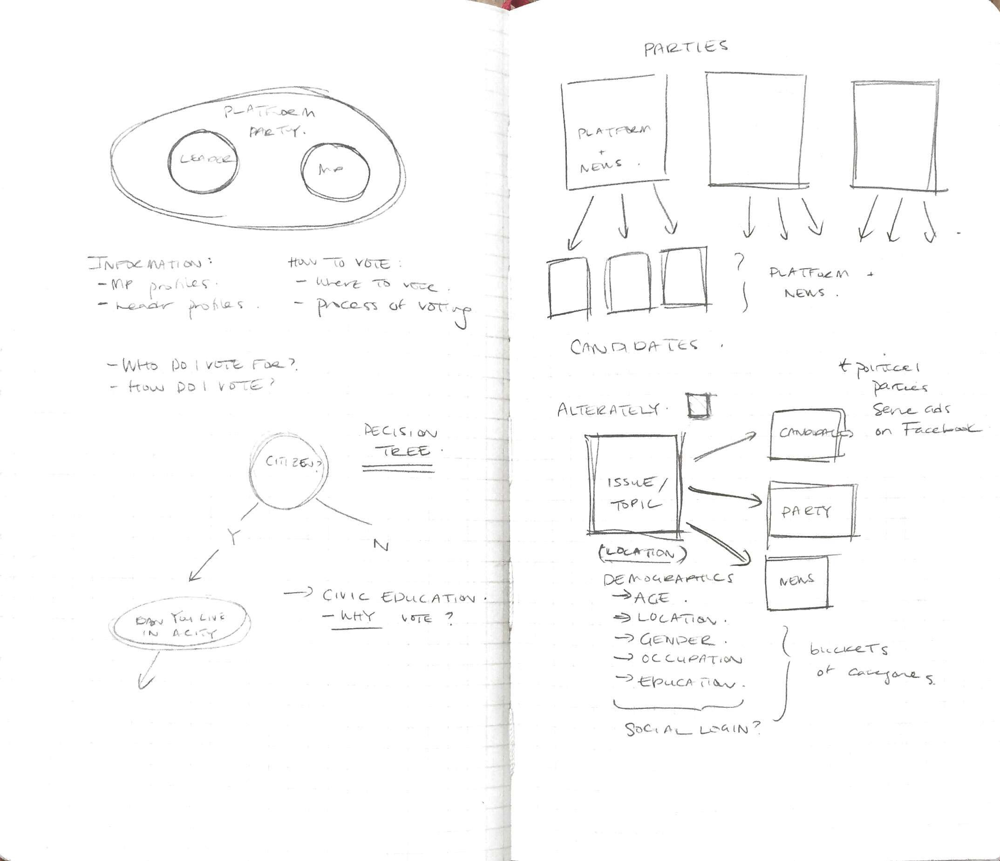
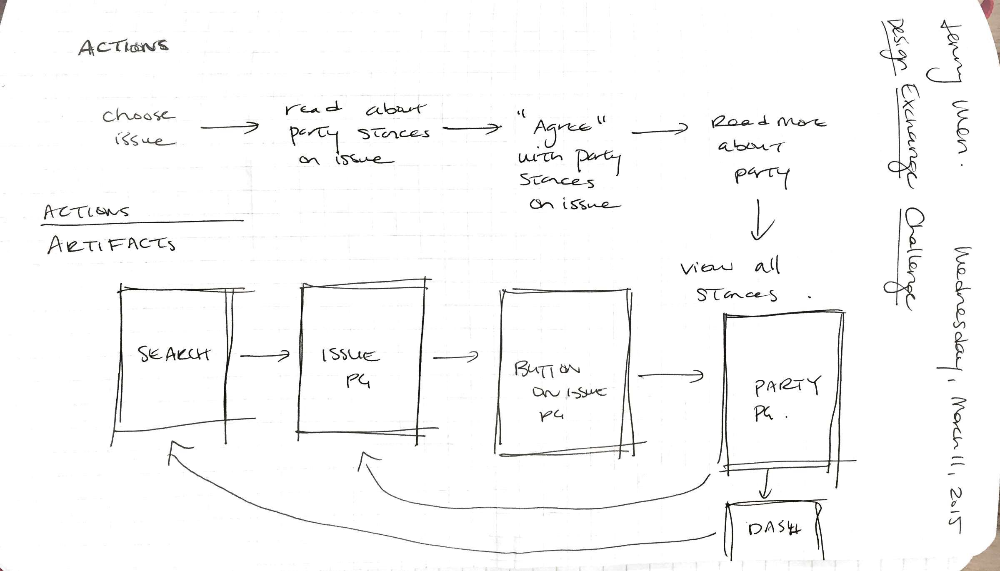
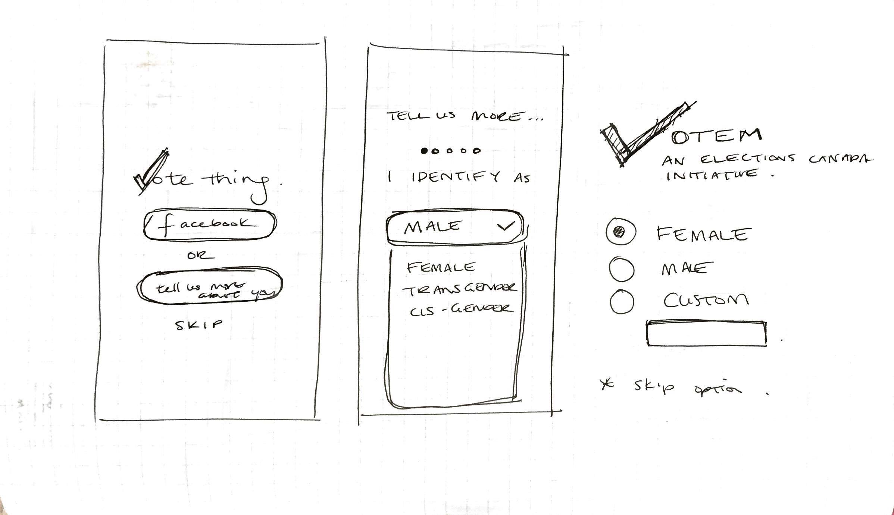
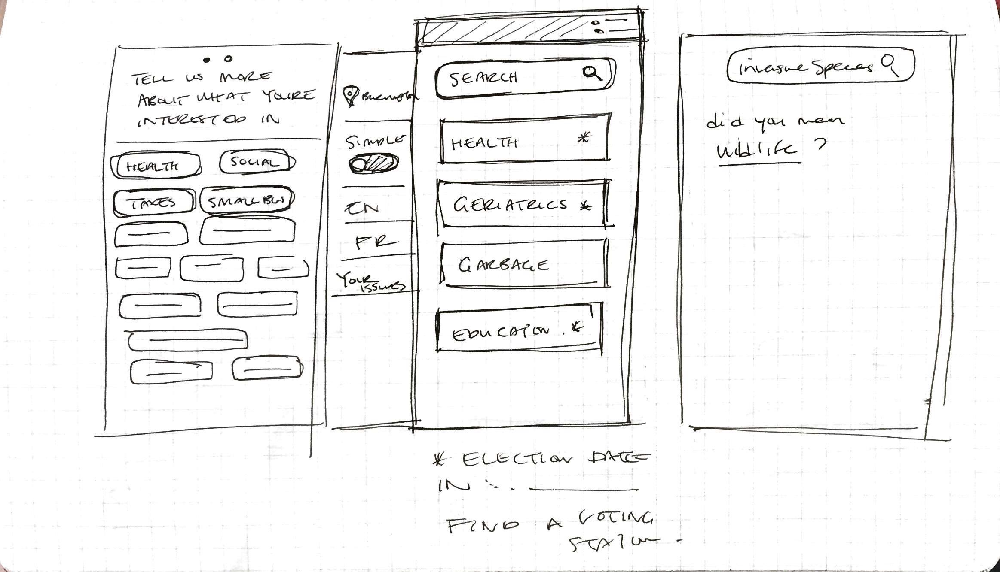
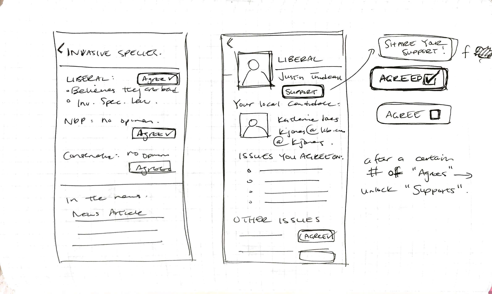
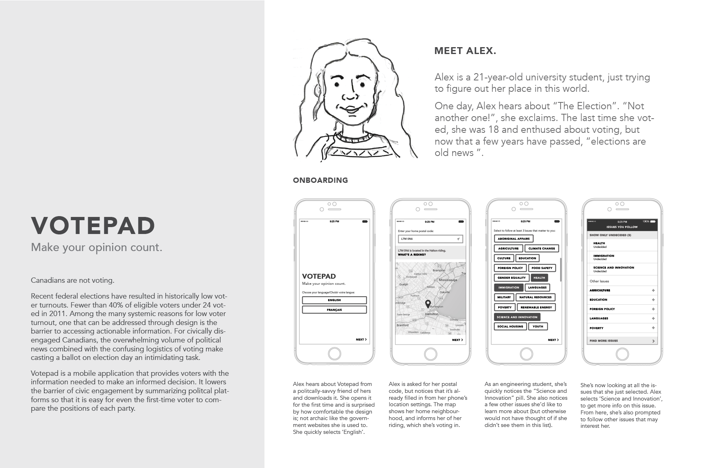
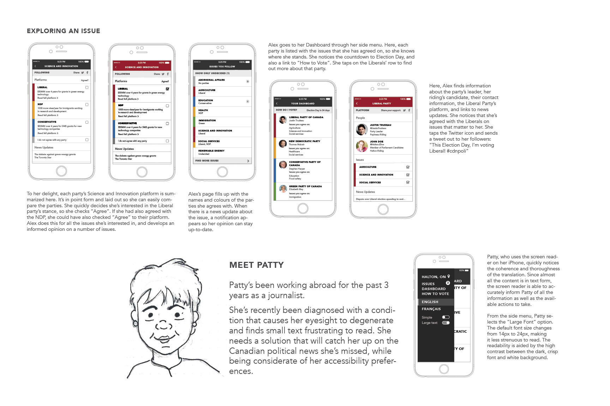
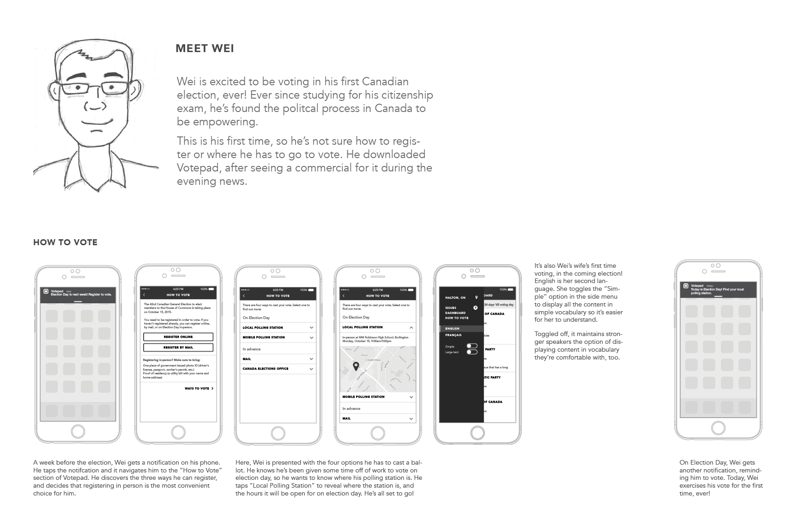

Votepad
Design Exchange Enabling Change Challenge

Role
My thought-partner-in-crime for this one was Joey Loi. We worked together on this, during the month of March 2015. Together, but remotely. I pushed most of the pixels, and Joey was fundamental in conducting research and shaping the story of our design.
The Design Exchange in Toronto, Ontario hosts the Enabling Change Design Challenge every year, where the aim of the competition is to bring together students across different design disciplines to present project ideas that remove barriers for people with disabilities and promote social inclusion.
Process
Having worked in industry for the past few years, this was a refreshing project to work on, because we didn't need to feel limited by sprint cycles or by business motivations. We got to design for the people.
In GDocs, with flawless typographic form (see below), Joey and I scoped out the problem. This was the hard part! There were so many different problems we could tackle, and we compiled a long, long list of them, but in the end we decided that a desirable problem to tackle would be one that we were both passionate about, and could make truly make a difference through interaction design.

Since Joey was in Ottawa at the time, he attended a super engaging policy conference one weekend, and was reminded of the low voter attendance at Canadian elections. The apathy surrounding voting was something we were both familiar with, not to mention, guilty of.
We scraped the internet and brainstormed reasons people decided not to vote, and the statement we decided to work from was something like this:

We thought about the different approaches there were to get people voting, and narrowed it down to two, distinct approaches:
We could either collect all of the information from people and tell them who to vote for, or give all of the necessary information and let them make their own decision.

We opted for the latter, because there had been previous solutions in the former bucket, including CBC's Vote Compass in the 2011 election hat received criticism for a Liberal bias. By allowing people to make their own choice, we were able to respect the notion that some issues were weighted more heavily by certain people.
User Journey
We decided on a flow where, once onboarded onto the app, the user would be presented with an array of political issues, and then be prompted to select which ones mattered to them most. At this point, we would aggregate and summarize the platforms of each political party's stance on the issue, and the user could then select which party, or parties resonated with them most.




Summary
From the one-pager we wrote:
Votepad is designed to address one of the underlying problems of low voter turnout: the high barrier to accessing actionable information faced by disengaged voters. For these Canadians, the overwhelming volume of political news combined with the confusing logistics of voting make casting a ballot on election day an intimidating task. The hypothesis follows: if voters are more informed about a) each party's position on issues that matter to them and b) how to vote, then voter turnout will increase.
Votepad is a mobile application that provides voters with the information necessary to make an informed voting decision. It is designed to lower the barrier of civic engagement by summarizing political platforms and news so that it can be easily understood by even the first-time voter. After the voter identifies the issues she is interested in, she is shown summaries of each party's platform on those issues in a way that is easy to make comparisons between the parties. By doing this, she develops an informed opinion on which parties best represent her values. To help voters who are unsure of how to register or where to vote, Votepad provides simple, explicit instructions.
The discussion of accessibility is two-fold. Votepad is a new way for Canadians to access the civic and democratic system. With mobile quickly becoming the preferred media consumption device of Canadians, a free mobile product allows civic engagement to manifest itself in the ways Canadians, especially young Canadians, expect to be engaged. All voters will benefit from having a low barrier way of accessing the information necessary to be civically engaged.
Storytelling and mockups
Based on the notion of design for everyone, we constructed personas and storylines for the types of users and their motivations for potentially using Votepad. Through this approach, our use cases became more tangible and relatable, and we were able to think about our design as a part of a user's voting narrative, as opposed to a standalone fragment of someone's voting experience.


